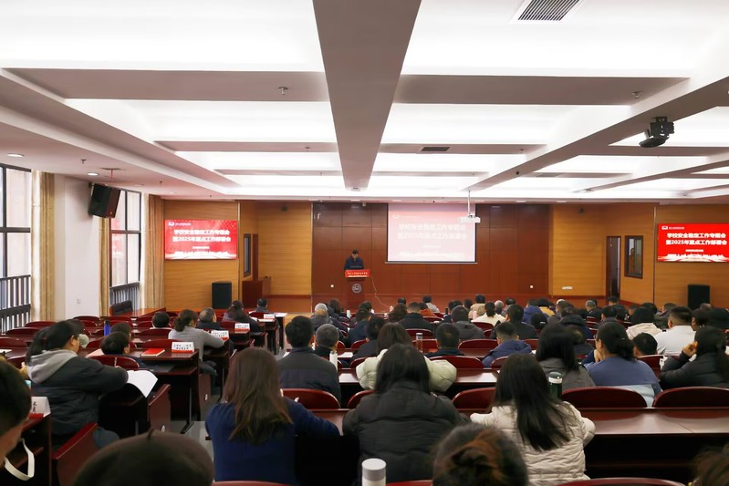
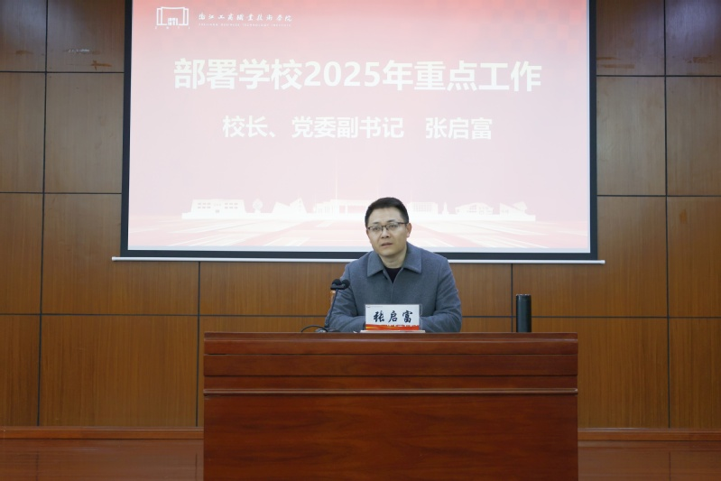
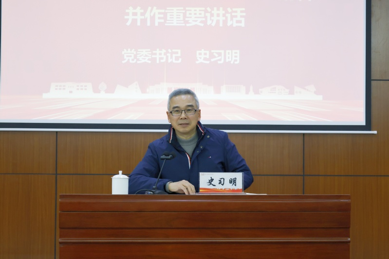

2月23日上午，学校召开安全稳定工作专题会暨2025年重点工作部署会，会议以"统筹发展和安全，坚决守牢安全底线，全力推进高质量发展"为主题，传达全省教育强省建设工作会议和全省高校党建工作会议精神，研究校园安全稳定工作，并部署2025年重点工作。全体校领导、全体中层干部、各二级学院学术副院长、全体青干班学员、各二级学院办公室主任、管理七级八级岗职员、全体辅导员等参会。会议由党委副书记俞位增主持。

校长、党委副书记张启富就2025年重点工作进行了部署。他通报了学校第二期"双高校"申报的基本情况，并指出2025年要进一步加强党对学校工作的全面领导，认真贯彻落实党委领导下的校长负责制，发挥好引领、聚力和保障作用，推动学校事业高质量发展。他强调：一是要一手抓人才培养质量，一手抓标志性成果。要以"标志性成果翻倍计划"等为载体，促进常规教学和标志性成果"双开花"。二是要一手抓内涵建设，一手抓服务支撑。要以专业结构调整和"五金"建设为抓手，加大"开门办学"力度，服务地方产业经济发展。三是要一手抓内部治理，一手抓产教融合。要以奖罚机制、管理体制变革等为契机，加大"微学院"建设力度，调动广大教职工参与学校中心工作的积极性。

党委书记史习明作重要讲话。他围绕"七个理念"和"七对关系"，重点阐释了安全与发展的辩证关系，强调"没有安全稳定就没有事业发展"，要进一步加强学校安全稳定工作，健全安全责任链条体系，构建安全稳定和谐的发展环境。他以5个"新"切入，高度凝练了学校目前所处的历史方位。一是"双高"建设进入新周期。经过前期的不懈努力，学校发出了工商声音，讲述了工商故事，为下一阶段工作明确了目标和方向。二是专业发展顺应新趋势。要紧跟国家、省、市产业发展形势，完善"以工为先、工商融合"的专业集群发展布局，主动求变、积极应变。三是学校发展构建新生态。要以"百千万"行动为抓手，积极争取各类资源，构建良好的发展生态圈。四是师生规模和办学空间进入新阶段。要加大"两翼"办学力度，做实做大"微学院"，推动办学绩效进一步增长。五是干部换届和岗位聘任进入新一轮。要打通"双向流动"通道，推进干部年轻化，把合适的人放到合适的位置。

史习明就下阶段工作提了四点要求：一是要做好人文关怀。要看到每一位教职工和学生，帮助他们在擅长的赛道找到成就感。二是要党政齐抓共管。要发挥好二级学院党政联席会议的作用，集体决策、科学决策。三是要注意方式方法。要充分调动每一位教职工的热情和积极性，不搞简单化、一刀切。四是要带头干、带着干。要强化干部队伍作风建设，激励广大干部冲在前、作示范。
俞位增在总结时指出，一是要贯彻落实好此次会议精神。各二级学院、各部门要抓紧组织召开各类会议，传达史书记重要讲话精神和张校长的2025年工作部署安排。二是要细化年度工作任务和举措。各二级学院、各部门要进一步细化工作任务和举措，对标对表、提前谋划、靠前部署、狠抓落实。三是要守牢校园安全稳定底线。广大教职工要警钟长鸣，在安全稳定这件大事上做到人人有责、人人履责、人人尽责，共同打造"平安工商"。